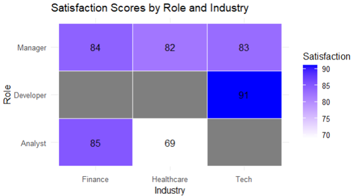
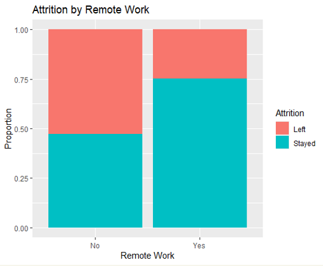
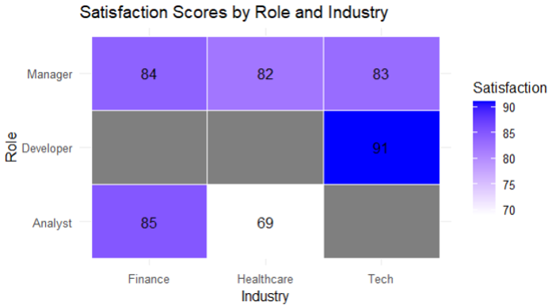
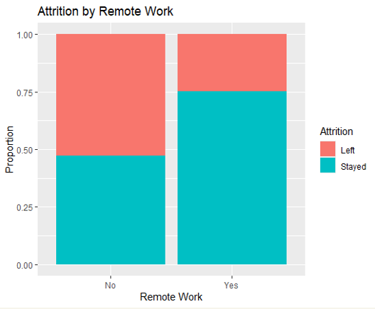

Overview
By Darren Keilty, Bryce Corrin, Kiegan Groot, Ammar Khan
This project analyzes job satisfaction and retention in remote work environments using statistical analysis in R. We scraped thousands of reviews, surveyed professionals across multiple industries, and built regression models to understand key satisfaction and attrition drivers.
- 📊 Identified top factors like flexibility, support, and work-life balance.
- 👥 Compared trends across age groups and seniority levels.
- 📉 Measured correlation between remote flexibility and attrition risk.
Sample Visuals
 


